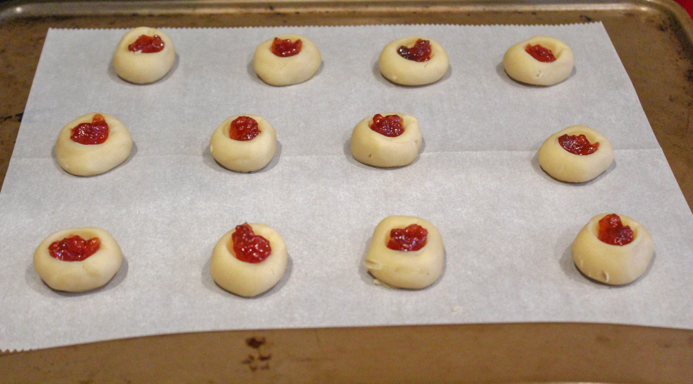
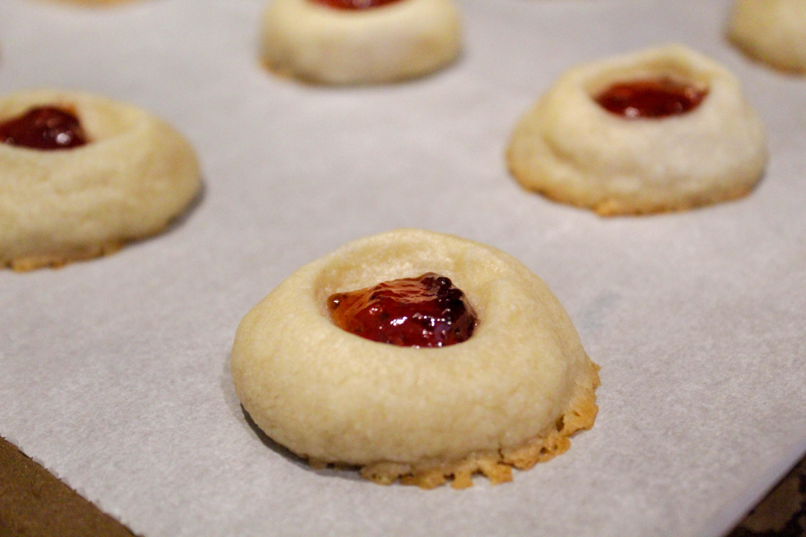
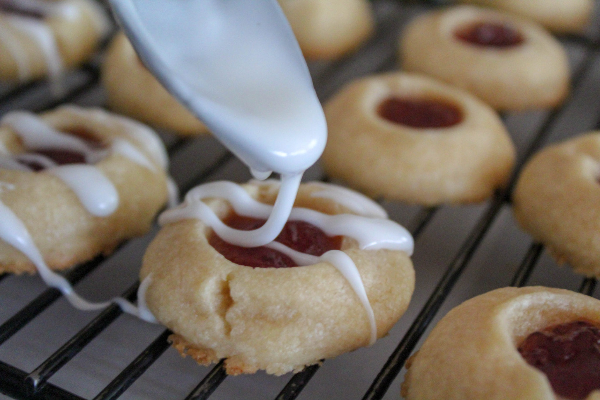
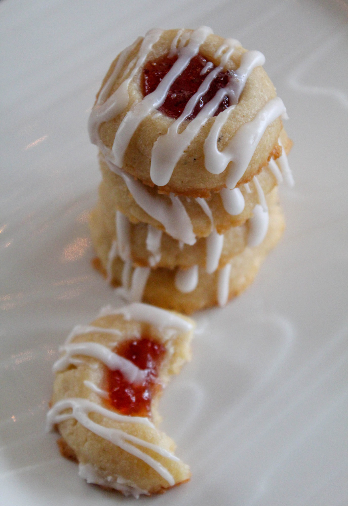

Pâte à sablé :Pâte à sablé :
1 tasse de beurre salé, température ambiante (2 bâtonnets)
2/3 tasse de sucre granulé
1 c. à thé d'extrait de vanille
1 c. à thé d'extrait d'amande
2 tasses et 2 c. à soupe de farine tout usage
1/2 tasse de confiture
Glaçage :
1 tasse de sucre en poudre
1 c. à soupe d'eau
1 c. à thé d'extrait d'amande
Méthode :
Dans un batteur sur socle avec un fouet plat, mélangez le beurre, le sucre et les extraits. Mélangez à haute vitesse jusqu'à ce que le mélange soit léger et mousseux.
Incorporez progressivement la farine jusqu'à ce qu'une pâte molle se forme. Enveloppez dans du plastique et réfrigérez pendant environ 2 heures.
Préchauffez le four à 350 degrés. Tapissez une plaque à pâtisserie de papier parchemin.
À l'aide d'une petite cuillère à glace, formez de petites boules avec vos mains. Pressez
votre pouce ou un petit objet rond au centre de chaque boule de pâte. J'ai eu de la
chance en utilisant l'extrémité étroite d'une cuillère à melon. Vous voulez juste une
PETITE empreinte dans le biscuit pour y mettre de la confiture. Ne pas trop remplir !
Utilisez environ 1/4 de cuillère à thé pour chaque biscuit.

Faites cuire pendant 12 à 15 minutes, juste jusqu'à ce que les bords inférieurs
commencent à brunir légèrement. Laissez refroidir complètement.

Mélangez les ingrédients du glaçage dans un petit bol. Placez les cookies sur une grille,
au-dessus d'une feuille de papier parchemin. Versez le glaçage lentement sur chaque
cookie pour obtenir un motif léger et strié.

Ces biscuits se congèlent très
bien, jusqu'à 3 mois. Ils se conservent également très bien à température ambiante pendant environ une semaine, ou au réfrigérateur (ou
dans un garage froid en hiver) pendant environ 3 semaines.
